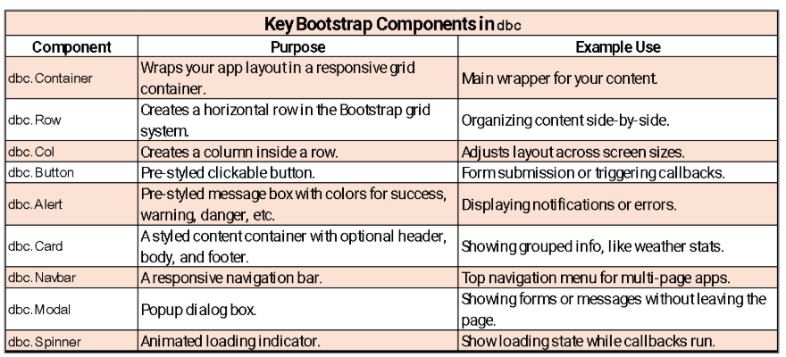
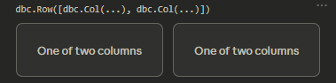
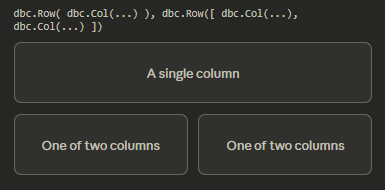
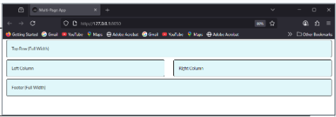
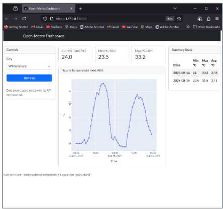

import dash_bootstrap_components as dbc
from dash import html
dbc.Row([
dbc.Col(html.Div('One of two columns')), # no md set → splits evenly (effectively md=6 each)
dbc.Col(html.Div('One of two columns'))
])Creating a Grid Layout in Dash
This section demonstrates how to create grid-based layouts in Dash using Dash Bootstrap Components (dbc) to make dashboards organized, responsive, and professional. It begins by contrasting Dash’s default vertical stacking of components with the flexible row-and-column grid system provided by Bootstrap. Students learn to use dbc.Row() and dbc.Col() to arrange content horizontally, apply embedded styles or external themes, and control spacing and responsiveness. The lesson then builds a full multi-column dashboard integrating real-world data from the Open-Meteo API. Using the requests and pandas libraries, students fetch 48-hour temperature forecasts for selected Virginia cities and visualize them with Plotly Express. Bootstrap cards display key metrics — current, minimum, and maximum temperature — alongside a line chart and a dynamic summary table, all arranged within a responsive grid.
Dash Layout and Bootstrap
Default vs. Grid Layouts
By default, Dash stacks components vertically (top to bottom) when you place them inside an html.Div() without any grid or flex styling:
Component 1
↓
Component 2
↓
Component 3This is useful for dashboards where content is consumed in a specific order (filters → charts → details). For side-by-side layouts, you need a grid system:
Component 1 | Component 2 | Component 3What Is Bootstrap?
Bootstrap is a popular front-end framework that provides a responsive grid layout, prebuilt UI components, and utility classes. Dash Bootstrap Components (dash-bootstrap-components, imported as dbc) makes Bootstrap available inside Dash apps.
Bootstrap’s grid system is built on 12 equal units per row. You control each column’s width with md=N, where N is the number of units that column occupies:
md= value |
Width | Common use |
|---|---|---|
md=12 |
Full width (100%) | Title rows, footers |
md=6 |
Half width (50%) | Two equal columns |
md=4 |
One-third width (33%) | Three equal columns (e.g., KPI cards) |
md=3 |
One-quarter width (25%) | Narrow sidebars |
The two core layout components are:
dbc.Row()— a horizontal container. Onlydbc.Col()components should be its direct children.dbc.Col()— where content actually lives. Itsmd=Nparameter controls its share of the 12-column grid.
Top Components in dbc

Grid Layout Examples
Example 1 — Two Equal Columns
When no md= is specified, Bootstrap divides the space equally among the columns.

Example 2 — One Full-Width Row, Then Two Columns

import dash_bootstrap_components as dbc
from dash import html
dbc.Row(
dbc.Col(html.Div('A single column')) # one Col inside → takes full 12-column width
),
dbc.Row([
dbc.Col(html.Div('One of two columns')),
dbc.Col(html.Div('One of two columns'))
])Building a Two-Column App
Applying a Bootstrap Theme
dash_bootstrap_components lets you apply a full Bootstrap theme via an external stylesheet, instantly giving your app Bootstrap’s grid, typography, and utility classes — no custom CSS required. Swap themes (e.g., dbc.themes.COSMO, LUX, MATERIA, CYBORG) for a different visual style while still overriding specifics in assets/style.css.
from dash import Dash, html
import dash_bootstrap_components as dbc
app = Dash(__name__, external_stylesheets=[dbc.themes.BOOTSTRAP])
app.title = "Multi Layout App"Embedded Styles
Embedded styles are Python dictionaries passed directly to the style prop. Use them for quick, component-specific overrides. For consistent app-wide styling, use an external stylesheet in assets/ instead.
box_style = {
"border": "2px solid black",
"borderRadius": "5px",
"margin": "5px",
"padding": "20px",
"backgroundColor": "#e0f7fa"
}Full Two-Column Layout
app.layout = dbc.Container([
# Row 1: full width — width=12 uses all 12 Bootstrap columns
dbc.Row(
dbc.Col(html.Div("Top Row (Full Width)", style=box_style), width=12)),
# Row 2: two equal columns — Bootstrap splits automatically when md is not set
dbc.Row([
dbc.Col(html.Div("Left Column", style=box_style)),
dbc.Col(html.Div("Right Column", style=box_style))
]),
# Row 3: full-width footer
dbc.Row(dbc.Col(html.Div("Footer (Full Width)", style=box_style), width=12))
], fluid=True) # fluid=True = full browser width; omit for a fixed max-width container
if __name__ == "__main__":
app.run(debug=True)
dbc.Container(fluid=True) makes the layout span the full browser width. Without fluid=True, Bootstrap applies a fixed maximum width with padding on both sides — appropriate for text-heavy pages but not for dashboards that should fill the screen.
Multi-Layout Weather App
Imports and City Coordinates
# MultiLayoutWeather.py
import requests
import pandas as pd
from dash import Dash, html, dcc, Input, Output
import dash_bootstrap_components as dbc
import plotly.express as px
# Each city maps to (latitude, longitude) — used to call the weather API
CITY_COORDS = {
"Williamsburg": (37.2707, -76.7075),
"Richmond": (37.5407, -77.4360),
"Virginia Beach": (36.8529, -75.9780),
"Roanoke": (37.27097, -79.94143),
"Charlottesville": (38.0293, -78.4767)
}
Fetching the Hourly Temperature
fetch_hourly_temp(lat, lon) returns a 48-row DataFrame — one row per hour — of forecast temperature data for a given location.
def fetch_hourly_temp(lat: float, lon: float) -> pd.DataFrame:
"""Fetch next-48-hours hourly temperature from Open-Meteo (no API key required)."""
url = (
"https://api.open-meteo.com/v1/forecast"
f"?latitude={lat}&longitude={lon}"
"&hourly=temperature_2m&forecast_days=2&timezone=auto"
)
r = requests.get(url, timeout=15)
r.raise_for_status() # raise exception on HTTP error (4xx/5xx)
data = r.json()["hourly"] # extract the nested hourly block from JSON
df = pd.DataFrame({
"time": data["time"],
"temp_C": data["temperature_2m"] # _2m = measured 2 meters above ground level
})
df["time"] = pd.to_datetime(df["time"]) # convert ISO 8601 strings to datetime objects
return dfBuilding Dashboard Components
Controls Panel
controls = dbc.Card([
dbc.CardHeader("Controls"),
dbc.CardBody([
dbc.Label("City"),
dcc.Dropdown(
id="city-dd",
options=[{"label": k, "value": k} for k in CITY_COORDS.keys()],
# "label" = what the user sees; "value" = what the callback receives
value="Williamsburg",
clearable=False,
),
html.Br(),
dbc.Button("Refresh", id="refresh", n_clicks=0, className="w-100"),
# w-100 = Bootstrap class: full width within the parent container
html.Hr(),
html.Small(
"Data source: open-meteo.com (no API key required).",
className="text-muted",
),
])
], className="mb-3") # mb-3 = Bootstrap margin-bottom spacing utilityKPI Cards and Chart
A KPI card is a small Bootstrap card that displays a single summary metric — a label and a large number. Each card’s id_ is updated by the callback.
def kpi_card(title, id_):
"""Creates a Bootstrap Card to display a single KPI value."""
return dbc.Card(
dbc.CardBody([
html.H6(title, className="text-muted mb-1"), # muted label text
html.H3(id=id_, className="mb-0"), # large value updated by callback
]),
className="h-100", # stretch to match the tallest card in the row
)
kpi_row = dbc.Row(
[
dbc.Col(kpi_card("Current Temp (°C)", "kpi-now"), md=4),
dbc.Col(kpi_card("Min (°C/48h)", "kpi-min"), md=4),
dbc.Col(kpi_card("Max (°C/48h)", "kpi-max"), md=4),
],
className="g-3 mb-3",
# g-3 = gutter spacing between columns; mb-3 = margin below this row
)
chart_card = dbc.Card([
dbc.CardHeader("Hourly Temperature (next 48h)"),
dbc.CardBody(dcc.Graph(
id="temp-chart",
config={"displayModeBar": False} # hide the Plotly modebar toolbar
)),
])Stats Table and Full Layout
table_card = dbc.Card([
dbc.CardHeader("Summary Stats"),
dbc.CardBody(html.Div(id="stats-table")), # filled dynamically by the callback
])
app.layout = dbc.Container(
[
navbar,
dbc.Row(
[
dbc.Col(controls, md=3), # left: 3/12
dbc.Col([kpi_row, chart_card], md=6), # center: 6/12 (KPIs above chart)
dbc.Col(table_card, md=3), # right: 3/12
],
# 3 + 6 + 3 = 12 — columns must sum to 12 (or leave unset for auto-equal split)
className="g-3",
),
html.Footer(
html.Small(
"Built with Dash + dash-bootstrap-components • Layout uses Row/Col grid",
className="text-muted",
),
className="mt-4", # top margin separating footer from content
),
],
fluid=True,
)Callbacks and Data
The Update Callback
@app.callback(
[
Output("temp-chart", "figure"), # 1. line chart figure
Output("kpi-now", "children"), # 2. current temp text
Output("kpi-min", "children"), # 3. min temp text
Output("kpi-max", "children"), # 4. max temp text
Output("stats-table", "children"), # 5. daily summary table
],
[Input("city-dd", "value"), Input("refresh", "n_clicks")],
)
def update(city, _):
# _ is the Python convention for "I receive this argument but don't use it"
# The refresh button triggers a re-run, but the click count itself is not needed
lat, lon = CITY_COORDS[city]
df = fetch_hourly_temp(lat, lon)
# KPI values extracted from the DataFrame
now = df.iloc[0]["temp_C"] # first row = current hour's temperature
tmin = df["temp_C"].min() # minimum over the full 48-hour forecast
tmax = df["temp_C"].max() # maximum over the full 48-hour forecast
# Line chart
fig = px.line(df, x="time", y="temp_C", markers=True, title=None)
fig.update_layout(
margin=dict(l=10, r=10, t=10, b=10),
yaxis_title="°C",
xaxis_title="Time"
)Building the Stats Table and Returning Results
# Aggregate hourly data into a daily summary table
summary = (
df.assign(Date=df["time"].dt.date) # extract just the date from each datetime
.groupby("Date")["temp_C"]
.agg(["min", "max", "mean"])
.round(1)
.rename(columns={"min": "Min °C", "max": "Max °C", "mean": "Avg °C"})
.reset_index()
)
table = dbc.Table.from_dataframe(
summary,
striped=True, # alternating row shading for readability
bordered=False,
hover=True # highlight row on mouse hover
)
fmt = lambda x: f"{x:.1f}" # format a float to 1 decimal place (e.g., 22.3456 → "22.3")
return fig, fmt(now), fmt(tmin), fmt(tmax), table
# Return order must match Output order: chart, kpi-now, kpi-min, kpi-max, stats-table
if __name__ == "__main__":
app.run(debug=True)